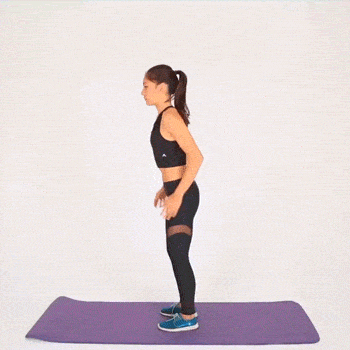

| EJERCICIOS | COMO SE HACE | VISUALIZACION |
|---|---|---|
| Plancha | Acuestate boca abajo. Es importante que las caderas no toquen el suelo y que tus piernas permanezcan estiradas. Apoyate sobre los antebrazos, contrar los músculos de la espalda baja y los hombros a la vez que elevas suavemente las caderas. |
|
| Saltar la cuerda | Coloca tus codos flexionados cerca de tus costados, cada una de tus manos sosteninendo el extremo de la cuerda, salta e intenta aterrizar sobre la punta de los pies |
|
| Jumping Jacks | Desde la posición inicial en sinergia, salta, separa las piernas y lleva los brazos por encima de la cabeza, de forma continua y sin pausa realiza otro salto y vuelve a la posición inicial. Repite. |

|
| Skater Hops | Párese con su peso sobre el pie derecho y la rodilla derecha doblada. Levanta la pierna izquierda del suelo detrás de ti. Ahora ve hacia tu izquierda empujándote con la pierna derecha. Aterriza sobre tu pie izquierdo, levantando tu pierna derecha del piso detrás de ti. |
|
| Burpees | Comienza en posición de sentadilla, con los pies separados al ancho de los hombros. Deja caer las caderas y coloca las palmas en el suelo, luego salta con los pies hacia atrás y baja tu cuerpo hasta el suelo. Ponte de pie y luego salta con los pies hacia delante para volver a la posición de sentadilla. |
 |